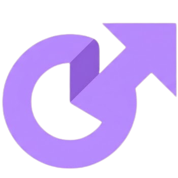

Redirecionando...
O link será aberto automaticamente em alguns instantes.
Não foi redirecionado?
Acesse aqui.
/:url-encurtada.
Busca a URL original na API e redireciona automaticamente. Detalhes em SECOES.md.

O link será aberto automaticamente em alguns instantes.
Não foi redirecionado?
Acesse aqui.